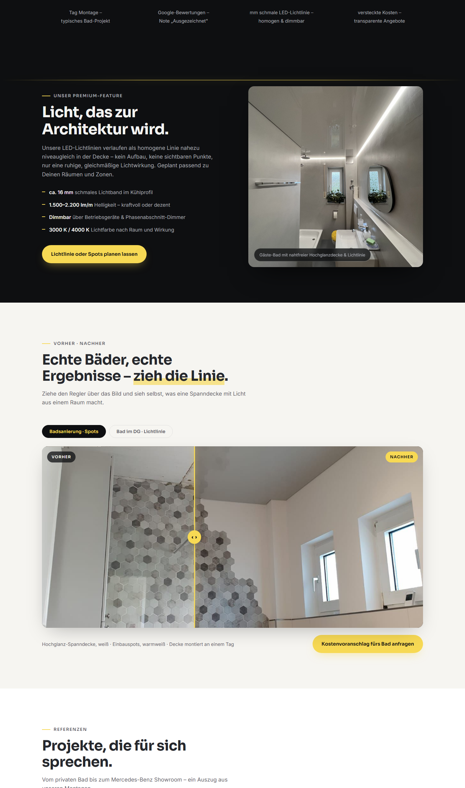
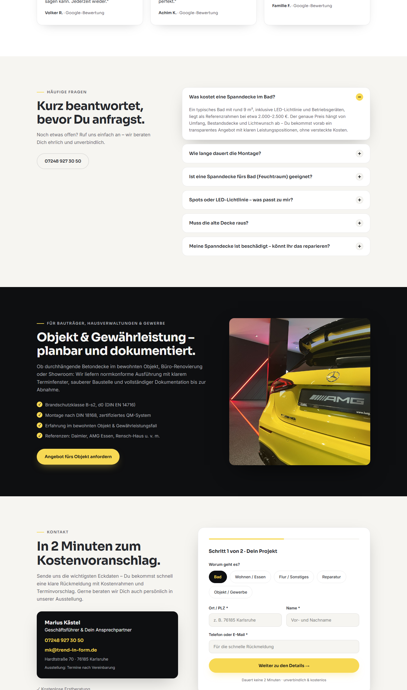
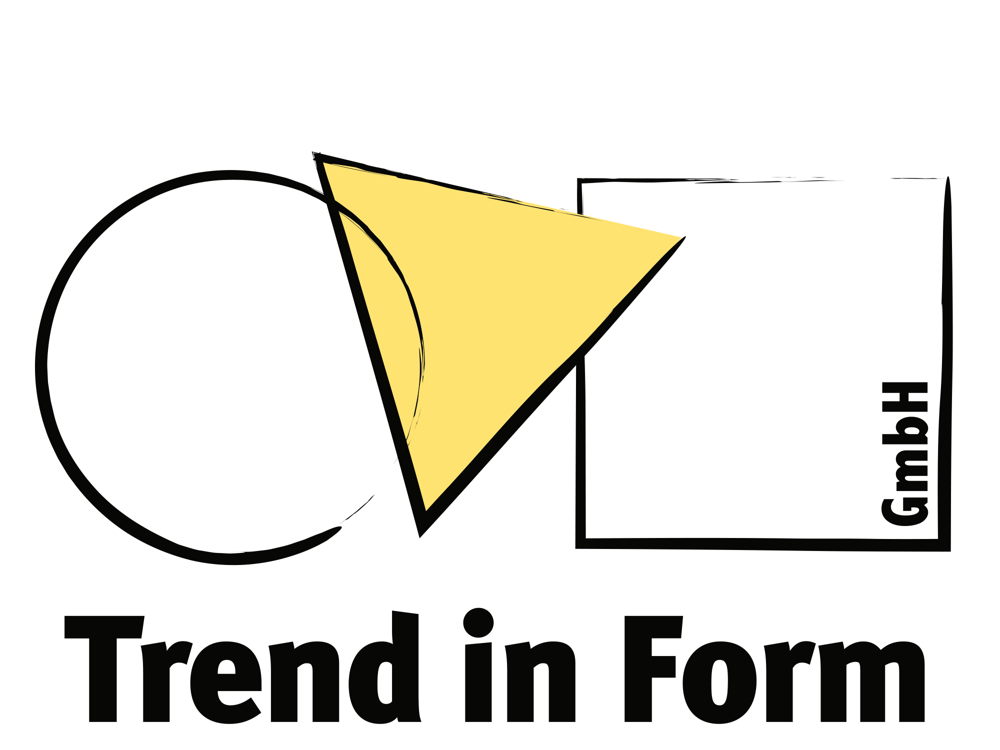
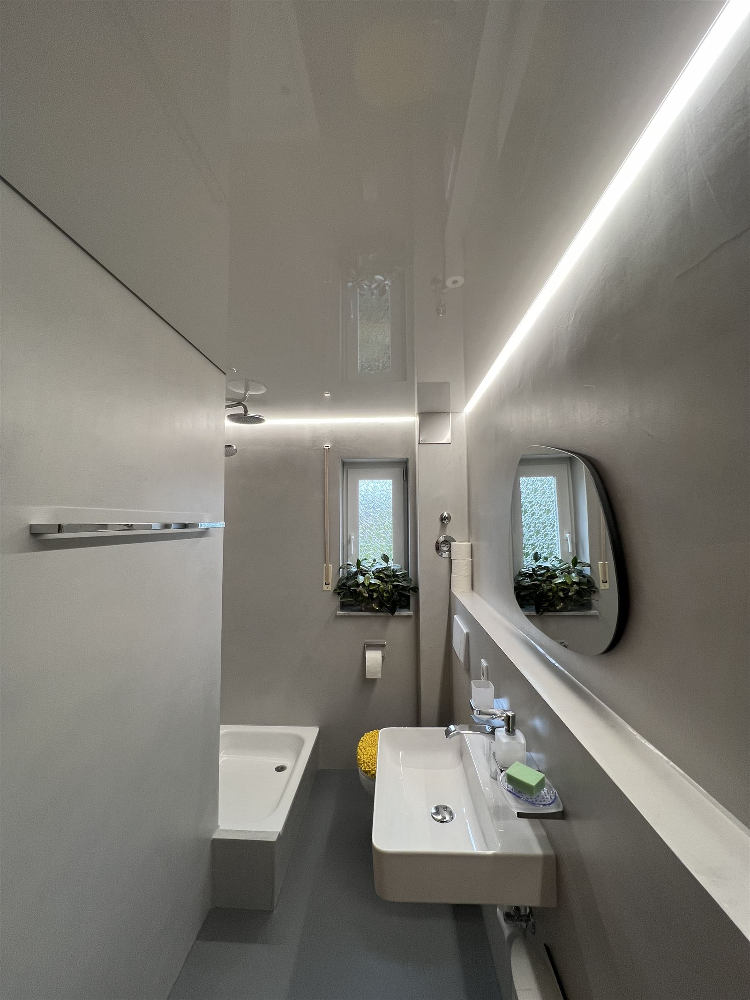
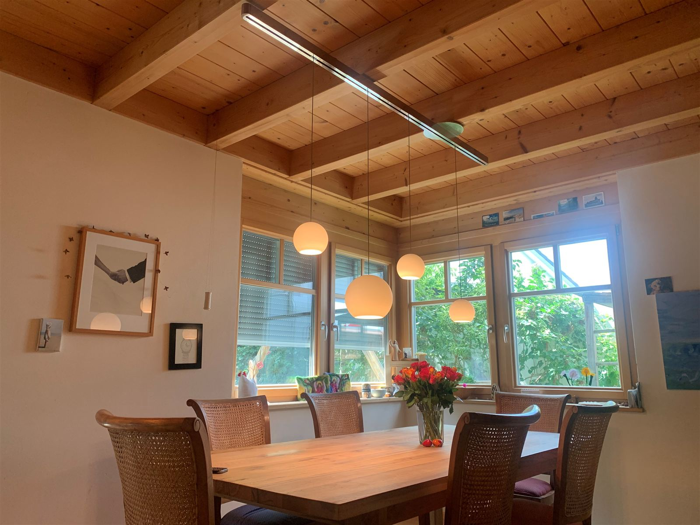
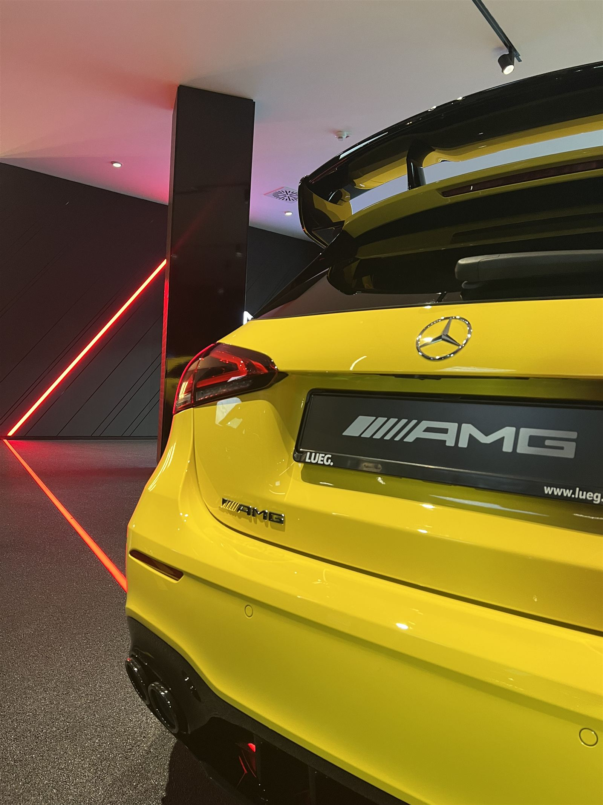

01 · Übersicht
Was dieses Handout zeigt
Die Startseite von Trend in Form verbindet handwerkliche Präzision mit einem modernen, dunklen Hero-Auftritt, Marken-Gelb als Lichtakzent und Petrol als ruhigen Gegenpol. Dieses Dokument erfasst das visuelle System — nicht als technisches Audit, sondern als gestalterische Referenz.
Hero & Erster Eindruck
Video-Hintergrund, Lichtlinie, gestaffelte Headline

Interaktive Module
Vorher-Nachher-Slider, Feature-Blöcke

Conversion & Vertrauen
FAQ, Formular, Kontaktkarte
- Seiten-Typ
- Landing Page / One-Pager
- Design-Charakter
- Modern-dark, editorial, premium
- Markenmotiv
- Lichtlinie · Formen-Trio
- CSS-Variablen
- style.css :root
02 · Farbkonzept
Farbigkeit
Gelb ist der Conversion-Akzent — reserviert für Buttons, Lichtlinien und Highlights. Petrol wirkt als sekundäre Markenfarbe für Links, Chips und Vertrauenssignale. Dunkle Flächen schaffen Tiefe, helle Abschnitte Atemraum.
Primärfarben · Marken-Gelb
Conversion, Lichtlinien-Motiv, Sterne, Scroll-Akzente
Yellow
#F7D954 · --yellow
Primärbuttons, Akzent-Text, Lichtlinie, Selection
Yellow Deep
#EFC93B · --yellow-deep
Button-Hover, Maus-Schweif
Sekundärfarben · Petrol
Ruhiger Gegenpol zum Gelb — Vertrauen, Navigation, aktive Filter
Secondary
#3E7C87 · --sec
Chips aktiv, Fokus-Ring, Checkmarks, Tags
Secondary Deep
#336A74 · --sec-deep
Step-Nummern, Hover auf hellem Grund
Secondary Soft
#9BC7CF · --sec-soft
Hero-Badges, Links auf Dark, Nav-Hover
Secondary Tint
rgba(62,124,135,0.13)
Step-Badge-Hintergrund
Neutrale Farben · Hintergründe & Text
Dark-Ink für Hero, Stats und Footer — Paper-Tint für rhythmische Abschnitte
Ink
#0E0F11 · --ink
Hero-Overlay, Dark Sections, Footer
Ink Card
#1E2025 · --ink-card
Karten auf dunklem Grund
Paper
#FFFFFF · --paper
Standard-Hintergrund, Cards, Formular
Paper Tint
#F6F5F1 · --paper-tint
Alternierende Sections, Input-Felder
Text
#26282D · --text
Fließtext, Headlines auf hellem Grund
Text Soft
#5D6067 · --text-soft
Beschreibungen, Meta-Texte, Labels
Text Inverse
#F4F4F2 · --text-inverse
Headlines und Text auf Dark
Text Inverse Soft
#A9ABB2 · --text-inverse-soft
Subtexte auf Dark, Hero-Beschreibung
03 · Typografie
Schriftarten & Hierarchien
Outfit für Headlines und UI-Elemente — leicht, modern, mit leicht negativem Letter-Spacing. Inter für Fließtext und Formulare — neutral und gut lesbar.
- Headlines
- Outfit · 200–600
- Body
- Inter · 300–500
- Letter-Spacing
- −0.02em (Headlines)
- Line-Height
- 1.16 (H) · 1.6 (Body)
H1 · Hero Headline
Morgens Baustelle. Abends ein Raum, der Dich begeistert.
Outfit · clamp(38px, 6vw, 72px) · weight 300 / accent 500 · line-height 1.12
H2 · Section Headline
Jeder Raum hat eine Decke.
Wenige haben ein Konzept.
Outfit · clamp(32px, 4.2vw, 48px) · weight 400 · max-width 680px
H3 · Card / Step Title
Spanndecke im Bad
Outfit · 21px (Cards) / 17px (Steps) · weight 400
Fließtext · Section Description
Sag uns, wo Dein Projekt spielt. Wir zeigen Dir, was darüber möglich ist — von der ersten Beratung bis zur Abnahme.
Inter · 17px · color --text-soft · line-height 1.6
Eyebrow · Section Label
Unsere Leistungen
Outfit · 12px · weight 500 · letter-spacing 0.18em · uppercase · + Formen-Signet
Meta / Small · Badges, Captions
DIN 18168 · dokumentierter Montagestandard · 13px
Inter · 12–14px · --text-soft / --text-inverse-soft
04 · Headlinestruktur
Überschriften-Hierarchie
Jede Section folgt dem Muster Eyebrow → H2 → Beschreibung. Der Hero nutzt eine gestaffelte H1 mit gelbem Akzent in der letzten Zeile. Auf dunklem Grund sind Headlines bewusst leichter (weight 300).
Wir könnten viel erzählen.
Unsere Decken zeigen es lieber.
Vom privaten Bad bis zum Showroom von Mercedes Benz: ein Auszug aus unseren Montagen.
Hierarchie & Wirkung
- Eyebrow — Kategorisiert die Section, trägt das Formen-Trio als Marken-Signet
- H2 — Emotionaler Hook, oft zweizeilig mit Zeilenumbruch
- Beschreibung — Sachliche Ergänzung in --text-soft, max. ~680px breit
- Accent — Gelb (.accent) oder Petrol-Highlight (.accent-dark) für Schlüsselworte
Licht, das nicht leuchtet.
Es wohnt.
Echte Bäder, echte Ergebnisse.
Zieh selbst die Linie.
05 · Buttons
Button-System
Pill-förmige Buttons mit Outfit Medium. Primär in Marken-Gelb für Conversion, Ghost für sekundäre Aktionen. Hover hebt leicht an (translateY −2px) und vertieft den Schatten.
- Border-Radius
- 999px (Pill)
- Padding Standard
- 14px 26px
- Padding Large
- 17px 34px
- Font
- Outfit 500 · 15–16px
- Border
- 2px solid transparent
- Hover Primary
- translateY(−2px) · --yellow-deep
- Hover Ghost
- border --sec-soft / --sec
- Schatten Primary
- 0 10px 26px −14px rgba(14,15,17,.45)
06 · CTA-Elemente
Call-to-Action-System
CTAs sind durch Marken-Gelb sofort erkennbar. Sie erscheinen im Hero, in Feature-Blöcken, nach dem Vergleichs-Slider, im B2B-Strip und als Sticky-Bar auf Mobile.
Spanndecke im Bad
Kostenvoranschlag fürs Bad →07 · Navigation
Hauptnavigation
Fixed Header mit transparentem Startzustand über dem Hero. Beim Scrollen (>40px) wechselt er zu hellem, geblurrtem Hintergrund — inklusive Logo-Swap von Negativ zu Positiv.

- Position
- fixed · z-index 100
- Container
- min(1320px, 94vw)
- Logo Hero
- 84px → 64px (scrolled)
- Link-Hover
- 2px Unterstreichung --sec
- Mobile ≤720px
- Burger-Menü · Fullscreen-Dropdown
- Mobile CTA
- Telefon-Icon · Sticky-Bar unten
08 · Hero-Section
Hero-Aufbau
Vollbild-Hero mit Video-Hintergrund, zweistufigem Gradient-Overlay, animierter Lichtlinie und schwebenden Logo-Formen. Rating, gestaffelte H1, Subline, CTA-Gruppe und Trust-Bar bilden den ersten Conversion-Moment.
Morgens Baustelle.
Abends ein Raum,
der Dich begeistert.
Wir verbinden Spanndecke, Licht und Akustik zu einem Ergebnis, das man spürt: eine makellose Fläche, ruhiges Licht und ein klarer Plan von der ersten Beratung bis zur Abnahme.
- DIN 18168dokumentierter Montagestandard
- B-s2, d0Brandschutz nach DIN EN 14716
- Phthalatfreiund RoHS konform
- 1 Tagtypische Montage im Bad
- 1 Ansprechpartnerfür Decke, Licht und Montage
Autoplay-Video mit 0.4× Rate, Kino-Zoom. Gradient links dunkel, unten abdunkelnd.
2px gelbe Vertikale bei 8% links — Markenmotiv mit Glow-Effekt.
Kreis, Dreieck, Quadrat aus dem Logo — Drift + Maus-Verdrängung.
Gestaffelte H1-Zeilen, letzte Zeile in Marken-Gelb (.accent).
Primär + Ghost nebeneinander — klarer Conversion-Fokus.
5 Badges mit blur-Hintergrund — Normen und Social Proof.
- H1
- clamp(38px, 6vw, 72px)
- Subline
- clamp(16px, 2vw, 19px)
- Content-Padding
- 140px top · 120px bottom
- Container
- min(1180px, 92vw)
09 · Grid & Layout
Layoutsystem
Ein zentrierter Container (1180px / 92vw) bildet das Rückgrat. Sections wechseln zwischen White, Paper-Tint und Ink-Dark — mit 132px vertikalem Padding (88px Mobile).

10 · Kacheln & Cards
Card-Elemente
Drei Card-Typen prägen die Seite: Leistungs-Cases (hoch, bilddominant), Galerie-Items (4:3) und Prozess-Steps (textbasiert). Alle nutzen 18px Radius und dezente Schatten.
Leistungs-Cards · .case

Galerie-Cards · .gallery__item



Prozess-Steps · .steps li
- 01
Anfrage und Aufmaß
Du sendest uns Raum, Maße und Lichtwunsch.
- 02
Klares Angebot
Jede Leistung als eigene Position.
- 03
Saubere Montage
Meist an einem Tag, staubarm.
- Case Hover
- translateY(−6px) · img scale(1.06)
- Spotlight
- Radial-Gradient folgt Maus
- Gradient Overlay
- 185deg · transparent → 88% ink
- Schatten
- --shadow · 0 18px 50px −30px
11 · FAQ
Accordion / FAQ
Native <details>-Elemente mit Custom-Styling. 2-Spalten-Layout: Headline links, Accordion rechts. Nur ein Eintrag gleichzeitig offen — Icon rotiert, Hintergrund wechselt zu Petrol.
Was kostet eine Spanndecke im Bad?
Ein typisches Bad mit rund 9 m² liegt als Referenzrahmen bei etwa 2.000 bis 2.500 Euro — transparent und ohne versteckte Kosten.
Wie lange dauert die Montage?
Ein Bad ist in der Regel an einem Tag fertig montiert, inklusive Licht. Es entsteht kein Abriss und kaum Staub.
Spots oder Lichtlinie: Was passt zu mir?
Spots liefern punktuelles Licht. Die Lichtlinie wirkt ruhiger und moderner — oft kombinieren wir beides.
- Border-Radius
- 18px (--radius)
- Summary Padding
- 20px 24px
- Icon
- 26px Kreis · +/− Toggle
- Open State
- Icon --sec · shadow · fadeUp
12 · Slider & Vergleich
Interaktive Slider
Zwei slider-ähnliche Elemente: der Vorher-Nachher-Vergleich (Drag-Slider mit gelbem Handle) und das Trust-Marquee (endloser Text-Bandlauf). Beide sind zentrale Storytelling-Werkzeuge.
Vorher-Nachher · .compare__stage
- Aspect-Ratio 21:10 (Desktop) · 4:3.4 (Mobile)
- Gelber Divider mit ‹ › Handle
- Tags: „Vorher" (dark) · „Nachher" (petrol)
- Projekt-Auswahl via .chip-Buttons
- Mobile: Toggle statt Drag-Slider
Trust-Marquee · .marquee
- Endlos-Animation · 36s linear
- Uppercase Outfit · 14px · gap 34px
- Formen-Icons (Kreis, Dreieck, Quadrat) als Trenner
- Hintergrund --ink · border-top rgba white 6%
13 · Weitere UI-Komponenten
Zusätzliche Bausteine
Neben den Kernkomponenten nutzt die Seite Chips, Stats, Testimonials, Formulare, Feature-Blöcke und Spezial-Elemente wie die Scroll-Lichtlinie.
Chips / Filter · .chip
Stats · .stat
zum fertigen Raum
Testimonials · .quotes blockquote
★★★★★„Die Spanndecken in unserem Wohn- und Esszimmer mit den passenden Lichtelementen sind bis ins letzte Detail perfekt."
Formular · .form (2-Stufen)
Feature-Block · Bild-Text-Modul
Licht, das nicht leuchtet.
Es wohnt.
- Etwa 16 mm schmales Lichtband
- Dimmbar über Betriebsgeräte
- Scroll-Lichtlinie
- 3px links · wächst mit Scroll
- Preloader
- Formen-Trio + Licht-Sweep
- Contact Card
- --ink Hintergrund · Petrol-Links
- B2B Checkmarks
- Petrol-Kreis · weißes ✓
- Focus Ring
- 2px --sec · offset 3px
- Selection
- --yellow bg · --ink text
15 · Designcharakter
Zusammenfassung
Das Design verbindet handwerkliche Verlässlichkeit mit editorialer Eleganz — dunkle Inszenierung, warmes Licht-Gelb und präzise Typografie bilden ein wiedererkennbares System.
Gestalterische Prinzipien
- Licht als Leitmotiv — Die vertikale Lichtlinie, Scroll-Fortschritt und gelbe Akzente visualisieren das Kernprodukt: präzise, ruhige Beleuchtung.
- Dark meets Light — Hero, Stats und Feature-Sections in Ink; Leistungen, FAQ und Kontakt auf hellem Grund. Der Wechsel erzeugt Rhythmus und Lesbarkeit.
- Conversion durch Kontrast — Marken-Gelb ist bewusst sparsam eingesetzt: Buttons, CTA, Lichtlinie. Petrol übernimmt sekundäre Interaktionen.
- Vertrauen durch Details — DIN-Normen, Google-Rating, Vorher-Nachher-Slider und Testimonials bauen Glaubwürdigkeit auf, ohne die Ästhetik zu stören.
- Formen-Trio als Signet — Kreis, Dreieck, Quadrat aus dem Logo wiederholen sich in Eyebrows, Marquee, Preloader und Footer — subtile Markenkonsistenz.
- Micro-Interactions — Scroll-Reveal, Spotlight auf Cards, animierte Stats, Maus-Schweif und Hero-Formen machen die Seite lebendig, ohne zu überladen.
- Gesamtwirkung
- Premium · präzise · vertrauenswürdig
- Typografie
- Leicht · großzügig · klar hierarchisch
- Spacing
- Viel Weißraum · 132px Section-Rhythmus
- Radius
- Durchgängig 18px · Pill-Buttons
Design Handout · Trend in Form GmbH · Basierend auf index.html & style.css · Zur Live-Seite →